Industrial production
Vocational field: PI. Sixteen English words of the trade: tools, objects and everyday gestures. Open to everyone.
Four steps: from French to English, listen and choose, match, and complete a sentence at work. The Listen button reads the word in British English.
Word list
| Image | Français | English | Audio |
|---|---|---|---|
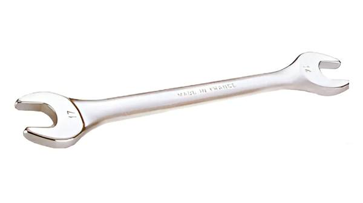 | la clé plate | spanner | |
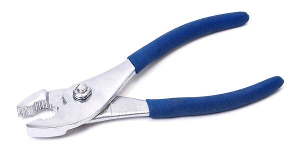 | la pince | pliers | |
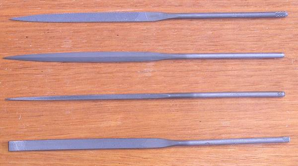 | la lime | file | |
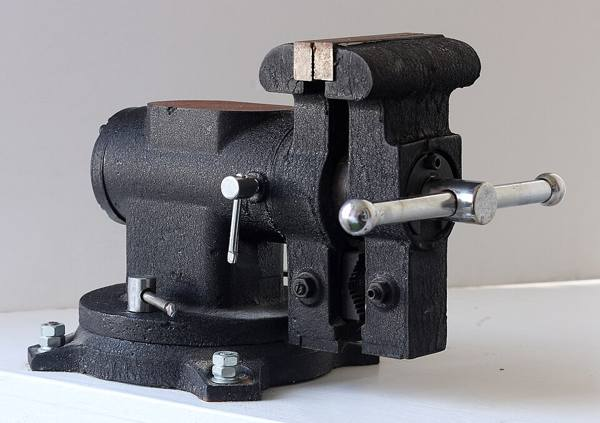 | l'étau | vice | |
 | l'établi | workbench | |
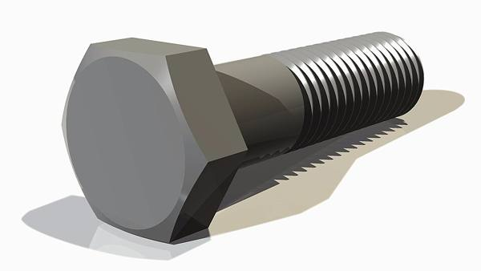 | le boulon | bolt | |
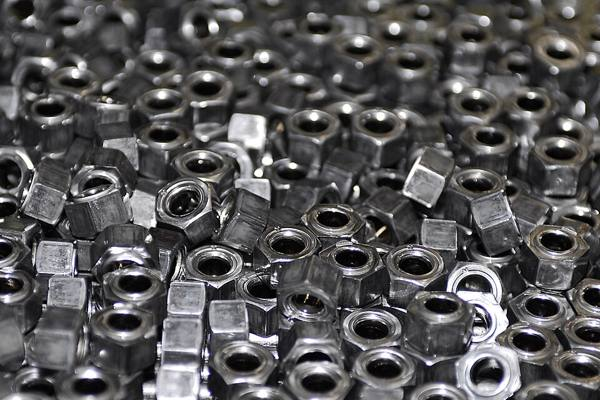 | l'écrou | nut | |
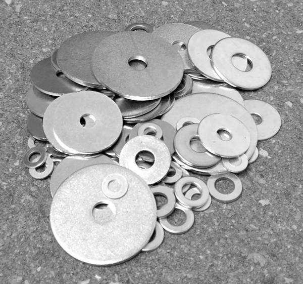 | la rondelle | washer | |
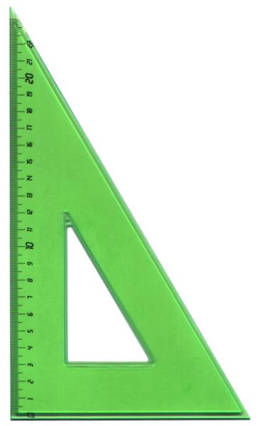 | l'équerre | set square | |
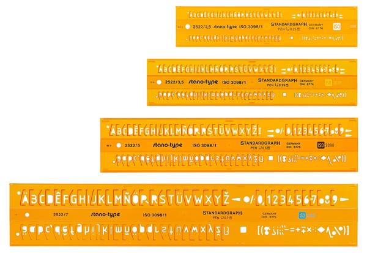 | la règle | ruler | |
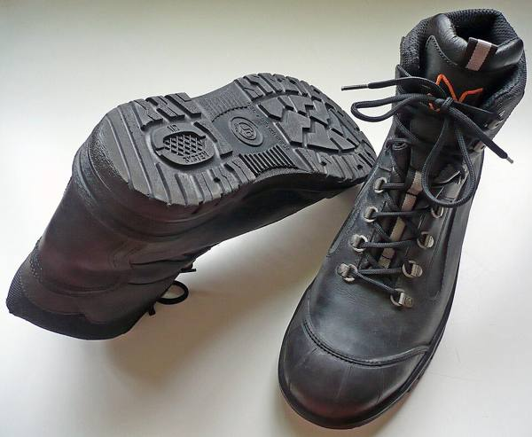 | les chaussures de sécurité | safety shoes | |
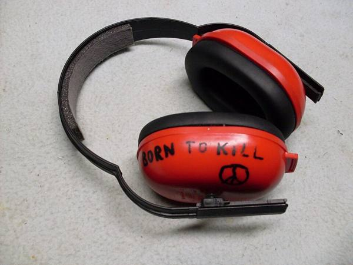 | le casque antibruit | ear defenders | |
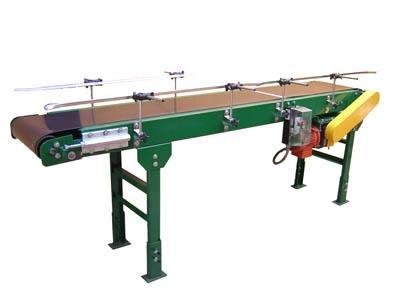 | le tapis roulant | conveyor belt | |
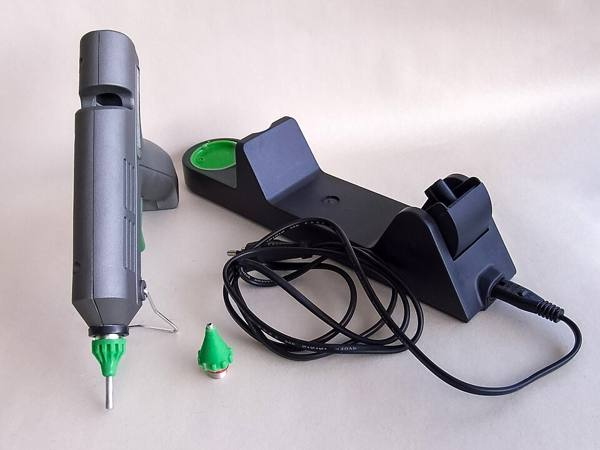 | le pistolet à colle | glue gun | |
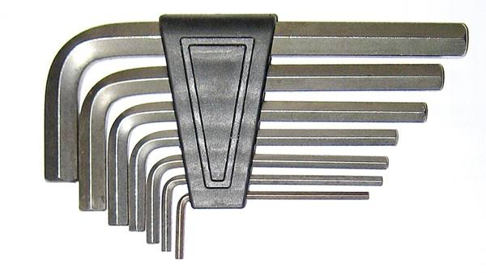 | la clé Allen | Allen key | |
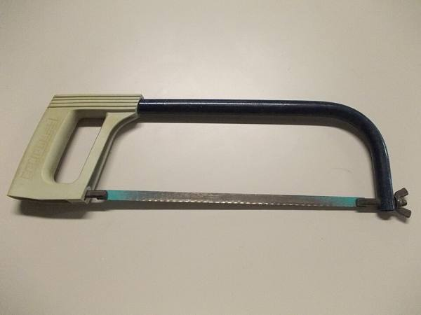 | la scie à métaux | hacksaw |
Teacher key: sentences at work
- Hold the metal in the ________. (vice)
- Tighten the nut with the ________. (spanner)
- Cut the metal tube with the ________. (hacksaw)
- The machine is loud: wear your ________. (ear defenders)
- Put a ________ under the nut. (washer)
- The boxes move on the ________. (conveyor belt)
In steps 1, 2 and 3, the right answer is the line in the word list.
Image credits
Photos under an open licence, from Wikimedia Commons, resized for the phone. Original drawings for gestures and ideas.
- la clé plate (spanner) : photo by GMairet, licence Public domain, file page on Wikimedia Commons.
- la pince (pliers) : photo by Evan-Amos, licence Public domain, file page on Wikimedia Commons.
- la lime (file) : photo by Glenn McKechnie, licence CC BY-SA 3.0, file page on Wikimedia Commons.
- l'étau (vice) : photo by Dmitry Makeev, licence CC BY-SA 4.0, file page on Wikimedia Commons.
- l'établi (workbench) : photo by Dietmar Rabich, licence CC BY-SA 4.0, file page on Wikimedia Commons.
- le boulon (bolt) : photo by Andrew Pertsev, licence CC0, file page on Wikimedia Commons.
- l'écrou (nut) : photo by Oytun 73, licence Public domain, file page on Wikimedia Commons.
- la rondelle (washer) : photo by Taylor 49, licence CC BY-SA 4.0, file page on Wikimedia Commons.
- l'équerre (set square) : photo by Luigi Chiesa, licence CC BY 3.0, file page on Wikimedia Commons.
- la règle (ruler) : photo by Lucasbosch, licence CC BY-SA 3.0, file page on Wikimedia Commons.
- les chaussures de sécurité (safety shoes) : photo by Francis Flinch, licence CC BY 3.0, file page on Wikimedia Commons.
- le casque antibruit (ear defenders) : photo by Roadside Guitars, licence CC BY-SA 2.0, file page on Wikimedia Commons.
- le tapis roulant (conveyor belt) : photo by r@ge, licence CC BY-SA 3.0, file page on Wikimedia Commons.
- le pistolet à colle (glue gun) : photo by W.carter, licence CC BY-SA 4.0, file page on Wikimedia Commons.
- la clé Allen (Allen key) : photo by Schekinov Alexey Victorovich, licence CC BY-SA 4.0, file page on Wikimedia Commons.
- la scie à métaux (hacksaw) : photo by Luke Milburn, licence CC BY 2.0, file page on Wikimedia Commons.
Vocabulary sheet to print
Large type (16 point minimum), in three formats: